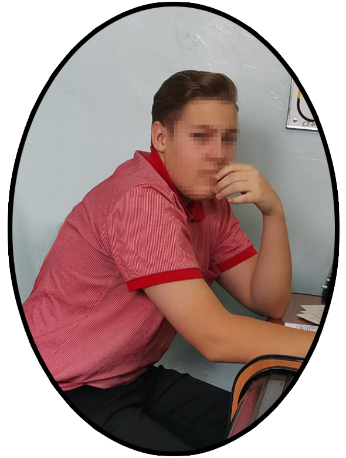

Здравствуйте. Меня зовут Степан Мурыгин, я — технический писатель, студент Педагогического колледжа г. Старый Оскол. Я родился 13 октября 2004 года, чтобы создавать гениальнейшие сайты как внешне, так и внутренне. Это моя первая работа, посвященная переселению на Марс. Раньше это звучало как фантастика, но с сегодняшними возможностями это вполне возможно реализовать в ближайшем будущем. Если у Вас возникли вопросы по сайту, то можете мне писать на почту: stepan.murygin@ya.ru